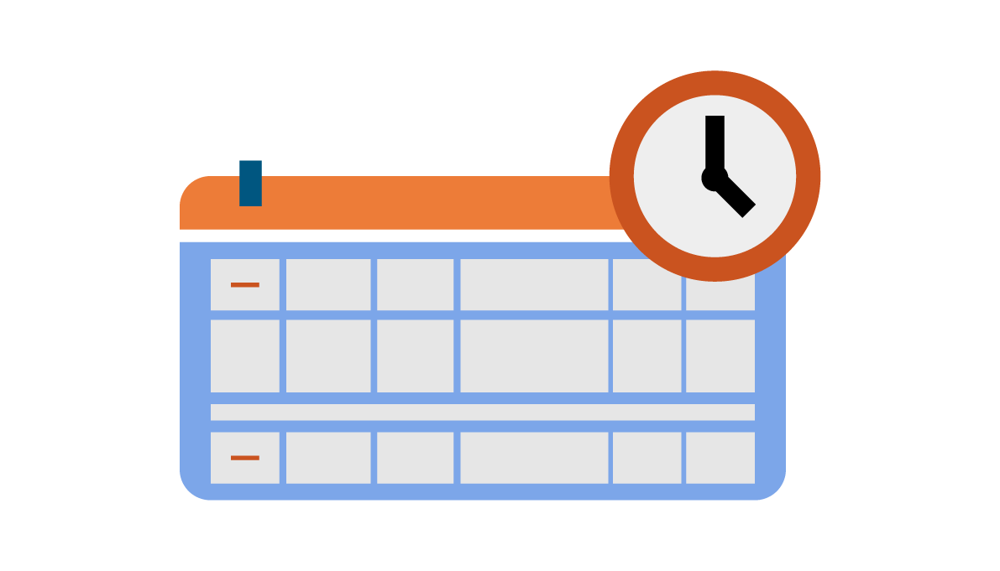

Acreditación
Procedimiento por el cual se verifica que los cursos cumplan con todos los requisitos tecnopedagógicos, exigidos en la Rúbrica Integrada de Acreditación de Curso Académico en la UNAD, según acuerdo 016 del 26 de mayo de 2016. La rubrica, cuenta con 43 criterios de evaluación que contemplan todos los elementos de cada entorno del aula virtual. (VIMEP, 2020)

Creación y configuración de los recursos
En nContents se encuentra toda la documentación y lineamientos generados por la VIMEP, los cuales están asociados a la correcta configuración de cada uno de los recursos y actividades que el(la) diseñador(a) usa en el proceso de alistamiento del curso. Por favor consúltela para adelantar correctamente su proceso de Acreditación.
Lineamientos VIMEP y documentación complementaria:

Guías para utilizar y añadir recursos turnitin: